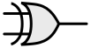

Logic gates
[A logic gate consists in] three connections where there may or may not be some electricity. Two of those connections are places where electricity may be put into the device, and the third connection is a place where electricity may come out of the device.
[J.C. Scott. 2009. But How Do It Know? The Basics of Computers for Everyone, 21]
Logic gates are the basic building blocks of digital computing. A logic gate is an electrical circuit that has one or more than one input and only one output. The input and output points of the gate are pins The input controls the output and the logic determining which types of input (on/off) lead to specific outputs (on/off) is isomorphic with the truth-conditions of the Truth-functional_connectives specifiable in terms of Truth-tables.
Physically, what ‘travels through’ the gates is electrical current and what constitutes the ‘gate’ is a transistor responding to the current. Going up a level of abstraction, the current/ charge is identified with a bit. It is bits that go into the gate and bits which come out: binary information that may be either 1 or 0.
Elementary and composite gates
We distinguish elementary from composite logic gates. An elementary gate is a single gate embodying a single logical connective. It cannot be reduced any lower as a logical abstraction. A composite gate is a gate made up of more than one elemen>tary gate and/or other composite gates.
An example of a composite gate would be a three-way AND. An AND with three inputs rather than the standard two that furnish the elementary AND gate. This gate would output 1 when all three gates have the value 1 and 0 otherwise. Adders and latche>s whilst being integrated circuits are also, technically speaking, composite gates.
Gate interface / gate implementation
The gate interface is an abstraction that the enables the user to think of the gate simply in terms of inputs and outputs, without being conc>erned with the technical details of how this is achieved. How it is achieved is the gate implementation.
We can demonstrate this with the earlier example of a three-way AND. The diagram below represents the gate as an interface:
// Add: Interface diagram
Whereas this diagram presents the implementation of the gate: it shows the specific combination of gates which creates the enables the behaviour represented in the interface diagram.
// Add: Implementation diagram
Importantly, a single interface may be implemented in a variety of ways. There is a one-to-many relationship at work here. From the point of view of the user interface these differences should not be detectable. This is another example of hardware abstraction
NOT gate
The NOT gate inverts the value of whatever input it receives
Truth conditions
| \(P\) | \(\lnot P\) |
|---|---|
| 1 | 0 |
| 0 | 1 |
Interactive circuit
NAND gate
The NAND gate inverts the truth conditions of AND.
Symbol

Truth conditions
| \(P\) | \(Q\) | \(\lnot(P \land Q)\) |
|---|---|---|
| 1 | 1 | 0 |
| 1 | 0 | 0 |
| 0 | 1 | 0 |
| 0 | 0 | 1 |
Interactive circuit
NAND is a universal logic gate: equipped with just a NAND we can represent every other possible logical condition. In practice with circuits, it is more efficient to use specific dedicated gates (i.e OR, AND, NOT etc) for the other Boolean connectives but in principle the same output can be achieved through NANDs alone.
OR gate
The OR gate represents the truth conditions of the [disjunction](Truth-functional_connectives
###Truth conditions.md#disjunction)truth functional connective
Symbol

Truth condition
Truth conditions
s
| \(P\) | \(Q\) | \(P \lor Q\) |
|---|---|---|
| 1 | 1 | 1 |
| 1 | 0 | 1 |
| 0 | 1 | 1 |
| 0 | 0 | 0 |
Interactive circui
Truth conditions
t
XOR gate
The OR gate represents the truth conditions of the exclusive OR
Symbol

Truth conditions
| \(P\) | \(Q\) | \(\lnot(P \Leftrightarrow Q)\) |
|---|---|---|
| 1 | 1 | 0 |
| 1 | 0 | 1 |
| 0 | 1 | 1 |
| 0 | 0 | 0 |
Interactive circuit
NOR gate
The NOR gate inverts the function of an OR gate
Symbol

Truth conditions
| \(P\) | \(Q\) | \(P \lor Q\) |
|---|---|---|
| 1 | 1 | 0 |
| 1 | 0 | 0 |
| 0 | 1 | 0 |
| 0 | 0 | 1 |